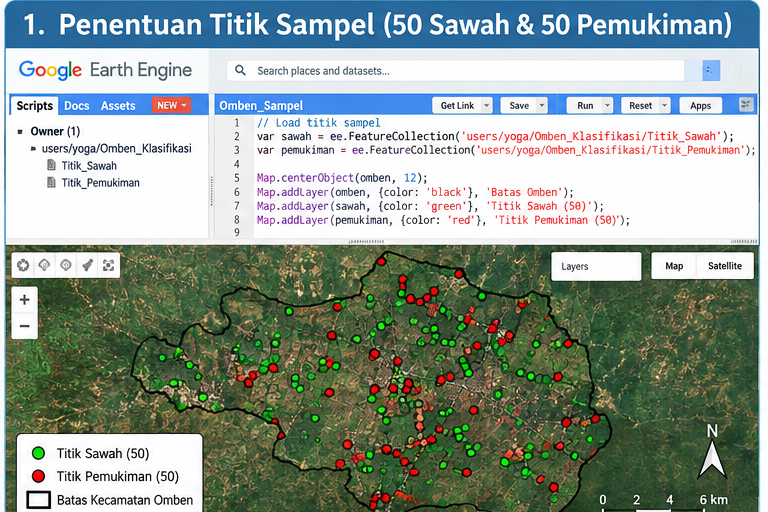
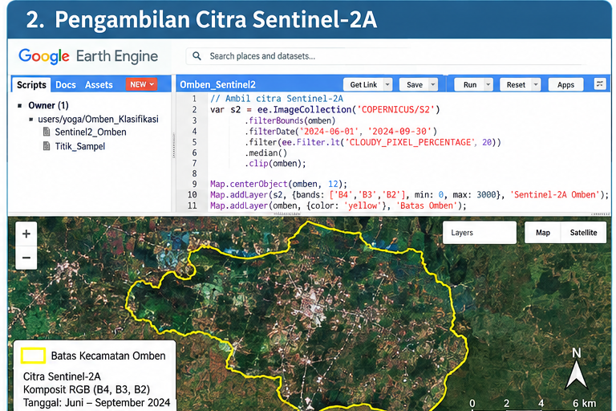
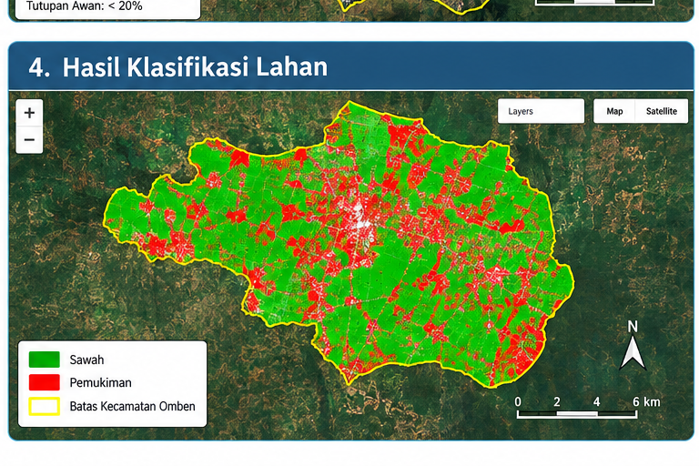

TUGAS 2 — PEMETAAN DAN KLASIFIKASI LAHAN MENGGUNAKAN CITRA SENTINEL-2A#
1. Pendahuluan#
Tugas 2 merupakan lanjutan dari proses pengolahan data pada tugas sebelumnya. Pada tugas sebelumnya dilakukan tahap persiapan dan penentuan wilayah yang akan digunakan dalam proses pengolahan data spasial.
Pada Tugas 2 ini, proses dilanjutkan dengan melakukan pemetaan dan klasifikasi tutupan lahan menggunakan citra satelit Sentinel-2A. Klasifikasi dilakukan pada wilayah Kecamatan Omben, Kabupaten Sampang, Jawa Timur.
Tutupan lahan yang digunakan dalam proses klasifikasi terdiri dari dua kelas, yaitu sawah dan pemukiman. Untuk membantu proses klasifikasi, dibuat titik sampel yang terdiri dari 50 titik sawah dan 50 titik pemukiman.
Pengolahan citra dilakukan menggunakan Google Earth Engine (GEE). Tahapan pengolahan meliputi penentuan area penelitian, pembuatan titik sampel, pengambilan citra Sentinel-2A, pembentukan data training, proses klasifikasi menggunakan Random Forest, serta visualisasi hasil klasifikasi.
2. Tujuan#
Tujuan dari Tugas 2 ini adalah:
Menentukan wilayah penelitian pada Kecamatan Omben, Kabupaten Sampang.
Menentukan Area of Interest (AoI) yang digunakan dalam proses pengolahan citra.
Membuat data titik sampel untuk kelas sawah dan pemukiman.
Menggunakan citra Sentinel-2A sebagai data utama klasifikasi.
Melakukan klasifikasi tutupan lahan menggunakan metode Random Forest.
Menampilkan hasil klasifikasi dalam bentuk peta.
Menghasilkan data hasil klasifikasi dalam format GeoTIFF (
.tif).
3. Wilayah Penelitian#
Wilayah penelitian yang digunakan pada Tugas 2 adalah Kecamatan Omben, Kabupaten Sampang, Provinsi Jawa Timur.
Wilayah tersebut digunakan sebagai lokasi penelitian karena terdapat berbagai jenis tutupan lahan yang dapat diamati menggunakan citra satelit, khususnya lahan pertanian dan kawasan pemukiman.
Informasi wilayah penelitian dapat dilihat pada tabel berikut.
Keterangan |
Informasi |
|---|---|
Kecamatan |
Omben |
Kabupaten |
Sampang |
Provinsi |
Jawa Timur |
Negara |
Indonesia |
Data Citra |
Sentinel-2A |
Platform Pengolahan |
Google Earth Engine |
4. Data yang Digunakan#
Data yang digunakan dalam proses pemetaan dan klasifikasi terdiri dari data citra satelit dan data titik sampel.
No. |
Data |
Keterangan |
|---|---|---|
1 |
Sentinel-2A |
Data citra satelit |
2 |
GeoJSON |
Data titik sampel |
3 |
Sawah |
50 titik sampel |
4 |
Pemukiman |
50 titik sampel |
5 |
Google Earth Engine |
Platform pengolahan data |
Jumlah titik sampel yang digunakan adalah 100 titik, dengan pembagian:
50 titik kelas sawah
50 titik kelas pemukiman
5. Area of Interest (AoI)#
Area of Interest (AoI) merupakan wilayah yang menjadi fokus dalam proses pengolahan citra. Pada Tugas 2 ini, area penelitian difokuskan pada wilayah Kecamatan Omben, Kabupaten Sampang.
Penentuan AoI dilakukan agar proses pengolahan citra Sentinel-2A dapat difokuskan pada wilayah penelitian dan tidak mencakup wilayah yang tidak diperlukan.
Dokumentasi AoI dan Titik Sampel#

Gambar 1. Area of Interest dan titik sampel wilayah penelitian
6. Penentuan Titik Sampel#
Titik sampel digunakan sebagai data referensi dalam proses klasifikasi. Setiap titik diberi kelas berdasarkan jenis tutupan lahan yang digunakan dalam penelitian.
Pada Tugas 2 digunakan dua kelas tutupan lahan.
6.1 Kelas Sawah#
Kelas sawah digunakan untuk merepresentasikan area yang merupakan lahan pertanian atau persawahan.
Jumlah sampel yang digunakan:
50 titik sawah
6.2 Kelas Pemukiman#
Kelas pemukiman digunakan untuk merepresentasikan area yang digunakan sebagai kawasan tempat tinggal atau area terbangun.
Jumlah sampel yang digunakan:
50 titik pemukiman
Dengan demikian, jumlah keseluruhan titik sampel adalah:
50 titik sawah + 50 titik pemukiman = 100 titik sampel.
7. Citra Sentinel-2A#
Citra Sentinel-2A digunakan sebagai sumber data utama dalam proses klasifikasi. Citra satelit memberikan informasi mengenai karakteristik permukaan bumi berdasarkan nilai spektral pada beberapa kanal.
Citra yang digunakan difokuskan pada wilayah penelitian sehingga informasi yang diperoleh dapat digunakan untuk membedakan karakteristik tutupan lahan sawah dan pemukiman.
Pengolahan citra dilakukan menggunakan Google Earth Engine karena platform tersebut menyediakan fasilitas untuk mengakses dan mengolah data citra satelit secara langsung.
Dokumentasi Citra#

Gambar 2. Citra Sentinel-2A pada wilayah penelitian
8. Metode Klasifikasi#
Metode klasifikasi yang digunakan pada Tugas 2 adalah Random Forest.
Random Forest merupakan metode machine learning yang menggunakan sejumlah decision tree untuk melakukan proses klasifikasi. Dalam penelitian ini, model digunakan untuk membedakan dua kelas tutupan lahan berdasarkan karakteristik spektral citra Sentinel-2A.
Data titik sampel digunakan sebagai data training. Nilai spektral pada lokasi titik sampel digunakan oleh model untuk mempelajari karakteristik masing-masing kelas.
9. Tahapan Pengolahan#
Proses pengolahan data pada Tugas 2 dilakukan melalui beberapa tahapan, mulai dari menentukan wilayah penelitian sampai menghasilkan peta klasifikasi tutupan lahan. Seluruh proses pengolahan citra dilakukan menggunakan Google Earth Engine.
9.1 Menentukan Wilayah Penelitian#
Tahap pertama adalah menentukan wilayah penelitian. Wilayah yang digunakan dalam tugas ini adalah Kecamatan Omben, Kabupaten Sampang, Jawa Timur.
Wilayah tersebut menjadi lokasi utama dalam proses pemetaan dan klasifikasi tutupan lahan menggunakan citra Sentinel-2A.
9.2 Menentukan Area of Interest (AoI)#
Setelah wilayah penelitian ditentukan, tahap berikutnya adalah menentukan Area of Interest (AoI). AoI digunakan sebagai batas wilayah yang menjadi fokus dalam proses pengolahan citra.
Dengan adanya AoI, proses pengolahan citra Sentinel-2A dapat difokuskan pada wilayah penelitian sehingga data yang digunakan sesuai dengan kebutuhan analisis.
9.3 Membuat Titik Sampel#
Tahap selanjutnya adalah membuat titik sampel yang digunakan sebagai data referensi dalam proses klasifikasi.
Pada penelitian ini digunakan dua kelas tutupan lahan, yaitu:
50 titik sampel sawah
50 titik sampel pemukiman
Sehingga jumlah keseluruhan titik sampel yang digunakan adalah 100 titik.
Titik sampel tersebut kemudian digunakan untuk membantu model dalam mengenali karakteristik masing-masing kelas tutupan lahan.
9.4 Mengambil Citra Sentinel-2A#
Setelah titik sampel ditentukan, tahap berikutnya adalah mengambil citra Sentinel-2A pada wilayah penelitian.
Citra Sentinel-2A digunakan sebagai sumber data utama karena memiliki informasi spektral yang dapat digunakan untuk membedakan karakteristik permukaan bumi.
Citra yang digunakan kemudian disesuaikan dengan wilayah AoI yang telah ditentukan sebelumnya.
9.5 Membentuk Data Training#
Nilai spektral dari citra Sentinel-2A pada lokasi titik sampel kemudian digunakan untuk membentuk data training.
Data training terdiri dari data yang mewakili dua kelas, yaitu sawah dan pemukiman. Data tersebut digunakan sebagai dasar bagi model klasifikasi untuk mempelajari karakteristik masing-masing kelas.
9.6 Melakukan Klasifikasi#
Setelah data training terbentuk, proses klasifikasi dilakukan menggunakan metode Random Forest.
Random Forest digunakan untuk mempelajari pola dari data training kemudian menerapkan pola tersebut pada citra Sentinel-2A.
Hasil dari proses tersebut adalah klasifikasi setiap piksel pada wilayah penelitian ke dalam kelas sawah atau pemukiman.
10. Hasil Klasifikasi#
Setelah seluruh tahapan pengolahan selesai dilakukan, diperoleh hasil klasifikasi tutupan lahan pada wilayah penelitian.
Hasil klasifikasi dibagi menjadi dua kelas tutupan lahan, yaitu sawah dan pemukiman.
Kode |
Kelas Tutupan Lahan |
|---|---|
1 |
Sawah |
2 |
Pemukiman |
Kelas sawah digunakan untuk menunjukkan area yang teridentifikasi sebagai lahan pertanian, sedangkan kelas pemukiman digunakan untuk menunjukkan area yang teridentifikasi sebagai kawasan terbangun atau tempat tinggal.
Peta Hasil Klasifikasi#

Gambar 4. Hasil klasifikasi tutupan lahan sawah dan pemukiman
11. Analisis Hasil#
Berdasarkan proses klasifikasi yang dilakukan, citra Sentinel-2A dapat digunakan sebagai salah satu sumber data untuk membedakan jenis tutupan lahan berdasarkan karakteristik spektralnya.
Pada proses ini, wilayah penelitian dikelompokkan menjadi dua kelas utama, yaitu sawah dan pemukiman. Kedua kelas tersebut memiliki karakteristik permukaan yang berbeda sehingga dapat digunakan sebagai dasar dalam proses klasifikasi menggunakan metode Random Forest.
Area sawah memiliki karakteristik yang berkaitan dengan vegetasi dan kondisi lahan pertanian, sedangkan area pemukiman lebih banyak memiliki karakteristik permukaan terbangun seperti bangunan dan infrastruktur.
Hasil klasifikasi kemudian divisualisasikan dalam bentuk peta agar persebaran kedua kelas tutupan lahan dapat diamati dengan lebih mudah.
Hasil ini dapat digunakan sebagai gambaran awal mengenai pola persebaran lahan sawah dan pemukiman pada wilayah Kecamatan Omben, Kabupaten Sampang.
12. Output#
Output yang dihasilkan dari Tugas 2 terdiri dari beberapa data dan hasil pengolahan, yaitu:
TUGAS 2
│
├── Area of Interest (AoI)
│
├── 50 Titik Sampel Sawah
│
├── 50 Titik Sampel Pemukiman
│
├── Citra Sentinel-2A
│
├── Data Training
│
├── Hasil Klasifikasi
│
└── GeoTIFF (.tif)
Output utama dari proses klasifikasi berupa data raster hasil klasifikasi yang dapat disimpan dalam format GeoTIFF (.tif).
Format GeoTIFF digunakan karena dapat menyimpan data raster beserta informasi spasialnya. Dengan demikian, hasil klasifikasi dapat digunakan kembali pada perangkat lunak Sistem Informasi Geografis (SIG) untuk proses analisis atau visualisasi lebih lanjut.
13. Kesimpulan#
Tugas 2 merupakan lanjutan dari tugas sebelumnya yang berfokus pada proses pemetaan dan klasifikasi tutupan lahan menggunakan citra Sentinel-2A.
Wilayah penelitian yang digunakan adalah Kecamatan Omben, Kabupaten Sampang, Jawa Timur. Proses klasifikasi dilakukan menggunakan dua kelas tutupan lahan, yaitu sawah dan pemukiman.
Data sampel yang digunakan berjumlah 100 titik, yang terdiri dari 50 titik sawah dan 50 titik pemukiman. Titik sampel tersebut digunakan sebagai data referensi dalam pembentukan data training.
Pengolahan data dilakukan menggunakan Google Earth Engine dengan metode Random Forest. Tahapan pengolahan dimulai dari penentuan wilayah penelitian, penentuan Area of Interest, pembuatan titik sampel, pengambilan citra Sentinel-2A, pembentukan data training, proses klasifikasi, hingga visualisasi hasil.
Hasil akhir dari proses tersebut berupa peta klasifikasi tutupan lahan yang membedakan area sawah dan pemukiman. Hasil klasifikasi juga dapat diekspor dalam format GeoTIFF sehingga dapat digunakan kembali dalam pengolahan data spasial.